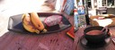
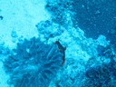
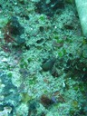

Resor · 2010-10-11 @ 11:42:36 Allmänt Permalink
Nusa Penida, Manta Point
Jag valde Sunar för att jag hittade Crystal divers, och de "Gillades" på Facebook av en jag litar på (Mr CD FW). Ja ni vet, bookningen i Kuta sprack mm. Men detta ska vara det lugna stället. OM inte hotellet hyrts för ett födelsedagskalas! Party party på restaurang och innergård. Men det var verkligen ok, lite mysigt att höra alla personliga tal och hur de sjöng med till ABBA-låtar.
Som vanligt, som vi här på Bali brukar fråga… :-)
…så kommer det vanliga, "var kommer du ifrån" och "vart ska du". Nog så viktiga frågor, om de inte bara hölls sig på det ytliga planet. Men kul att höra vilka vägar man vandrat. Sällan "charter 2 veckor", mer "Sålde bolaget och reser sen dess", "Min man jobbar med IT på Bali", "Vi har varit ute i 3 månader nu…".
Fast det innebär ju inte att man har bra personkemi. Undrar om det är fel på min engelska. Jag sa "According to my Schedule, I’m supposed to be in Thailand by 19-ish of October." och kände mig duktig, för jag försökte vara korrekt. Men holländaren o Ungerskan bara tittade utryckslöst på mig och lämnade konversationen hängande i luften. "Det är dom" tänker jag.
3 dyk runt "Manta Point" och Manta det blev. :-) En del småfisk som var fint, nudibranches mm. Dyk tre var strömt. Vilka srömmar! På ett annars lugnt hav, verkade det plötsligt bli oväder med höga vågor som bröt och den stora båten krängde… det var bara två strömmar som möttes utanför Nusa Penida!
Crystals personal är bra och trevliga! Jag dyker med DM "Amin"
Ser du den lilla söta muränan mitt i nedersta bilden? :-)
Dags att hänga utrustning och sen leta resa och hotell för i morrn
"Tank, I need a bargain program for souh east asia."


Toppenfrukost igen, transport till sandstranden och vada ut till båten. En sån där "Speedboat" som dom heter i asien. Stor cabinbåt med dubbla utombordare. Jag, en holländare, en tysk, två österikare, en från USA och en Ungerska.Som vanligt, som vi här på Bali brukar fråga… :-)
…så kommer det vanliga, "var kommer du ifrån" och "vart ska du". Nog så viktiga frågor, om de inte bara hölls sig på det ytliga planet. Men kul att höra vilka vägar man vandrat. Sällan "charter 2 veckor", mer "Sålde bolaget och reser sen dess", "Min man jobbar med IT på Bali", "Vi har varit ute i 3 månader nu…".
Fast det innebär ju inte att man har bra personkemi. Undrar om det är fel på min engelska. Jag sa "According to my Schedule, I’m supposed to be in Thailand by 19-ish of October." och kände mig duktig, för jag försökte vara korrekt. Men holländaren o Ungerskan bara tittade utryckslöst på mig och lämnade konversationen hängande i luften. "Det är dom" tänker jag.



Det blir 'Pigeon English' snart, "..an extraordinary and grotesque dialect" enligt en ordbok. "Me go Thailand soon". Eller 'Yoda', "Thailand in short time going I am".3 dyk runt "Manta Point" och Manta det blev. :-) En del småfisk som var fint, nudibranches mm. Dyk tre var strömt. Vilka srömmar! På ett annars lugnt hav, verkade det plötsligt bli oväder med höga vågor som bröt och den stora båten krängde… det var bara två strömmar som möttes utanför Nusa Penida!


Men dyket var lagom, jobbigt bortåt och fin resa tillbaka i sittande position och glida med, 18 m 60 min.Crystals personal är bra och trevliga! Jag dyker med DM "Amin"
Ser du den lilla söta muränan mitt i nedersta bilden? :-)
Dags att hänga utrustning och sen leta resa och hotell för i morrn
"Tank, I need a bargain program for souh east asia."